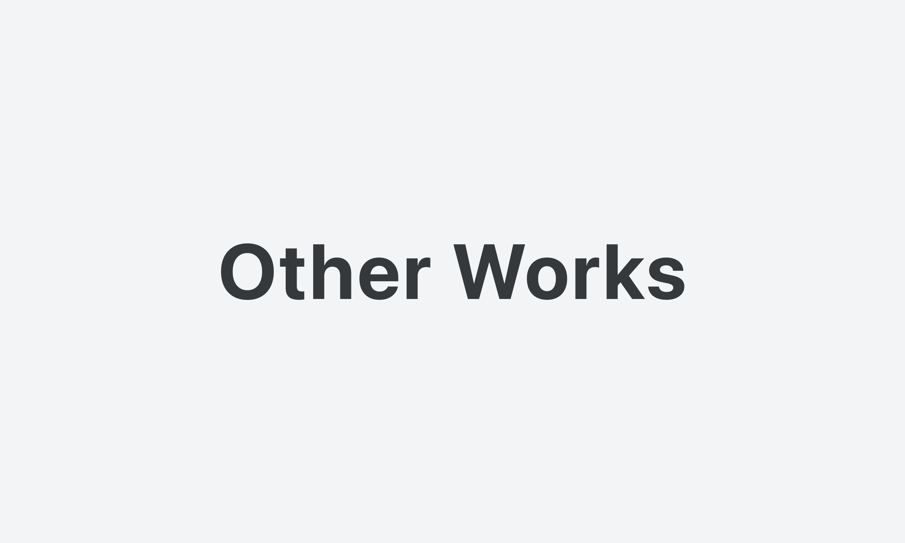
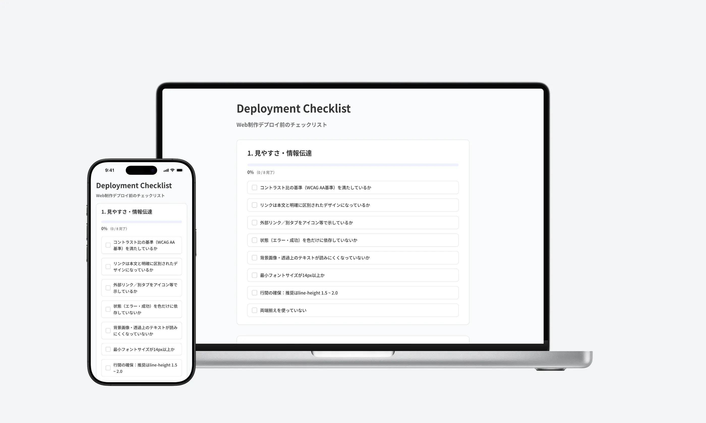
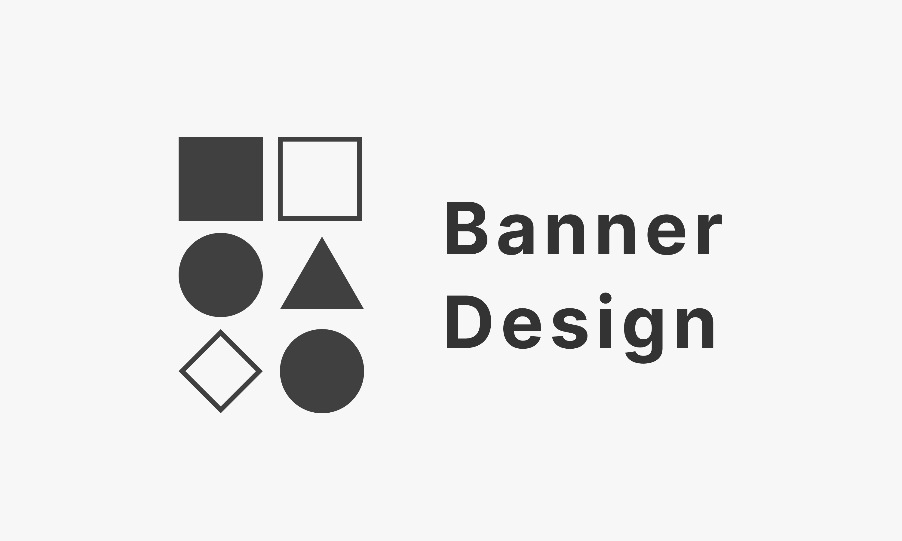

その他の自主制作の制作物
- Webサイト
- LP
- バナーデザイン
- 自主制作

本ページではその他の自主制作の制作物を掲載しています。
リサイクルショップ 店舗サイト
リサイクルショップのブランドイメージ刷新と来店促進を想定して制作。企画からUIデザイン、Web実装までを一貫して担当。従来のリサイクルショップが持つ雑多なイメージを排除した洗練されたビジュアル表現と、実際の利用・来店へスムーズに繋げる徹底した情報設計を両立させました。

リサイクルショップ 店舗サイト
プロジェクト詳細を確認したい方はこちらをクリック
本格ベーカリー 店舗サイト
本格ベーカリーの新規開業時の認知拡大と来店意欲の向上を想定して制作。企画からUIデザイン、Web実装までを一貫して担当。近年のデザイン動向分析のもと、こだわりを持つターゲット層に響く洗練されたトーン＆マナーと素材選定を徹底し、ブランドの品質の高さを伝える世界観を構築しました。

本格ベーカリー 店舗サイト
プロジェクト詳細を確認したい方はこちらをクリック
SmartOrdee アプリ紹介LP
人手不足や業務効率化に悩む飲食店オーナーへQRコードオーダーアプリの導入促進・問い合わせ獲得を想定して制作。企画からUIデザイン、Web実装までを一貫して担当。 サービスの利便性と導入メリットが直感的に伝わる情報設計と ビジュアル表現により、無料トライアルや資料請求への心理的ハードルを下げるLPを構築しました。

SmartOrdee アプリ紹介LP
プロジェクト詳細を確認したい方はこちらをクリック
IT企業のコーポレートサイト
架空のIT企業における信頼感の醸成とサービス認知向上を想定して制作。情報設計からUIデザイン、Web実装までを一貫して担当。 複雑になりがちな事業内容を論理的な情報構造と現代的で洗練されたビジュアルで整理し、視認性とブランドイメージを両立させたWebサイトを構築しました。

IT企業のコーポレートサイト
プロジェクト詳細を確認したい方はこちらをクリック
デプロイ前のチェックリスト
Web制作の最終工程において、サイトの品質を担保するために作成した「デプロイ前チェックリスト」です。 デザインの再現性、コーディングの整合性、リンク切れの有無、画像軽量化といった基本項目から、実機デバイスでの表示確認、アクセシビリティの検証まで、公開前に不可欠な確認事項を網羅しています。このリストに基づいた多角的な検証を徹底することで、公開後のトラブルを未然に防ぎ、実運用に耐えうる高い完成度と信頼性を備えたプロダクトの提供を可能にしました。

Deployment Checklist
Web制作のデプロイ前に確認したいチェックリストを制作しました。見やすさ、操作性、マークアップ、表示速度の4カテゴリで整理しています
バナーデザイン
Webサイトや広告運用など、多様な媒体での活用を想定して制作したバナーデザインの一覧です。 各バナーの目的に応じ、一目で情報の優先順位が伝わるレイアウト設計や、ユーザーの目を引く配色・タイポグラフィを追求しました。視覚的なインパクトだけでなく、ターゲットの行動を促すための構成やサイズ展開など、マーケティング視点を取り入れたデザインをまとめています。

バナーデザイン
プロジェクト詳細を確認したい方はこちらをクリック